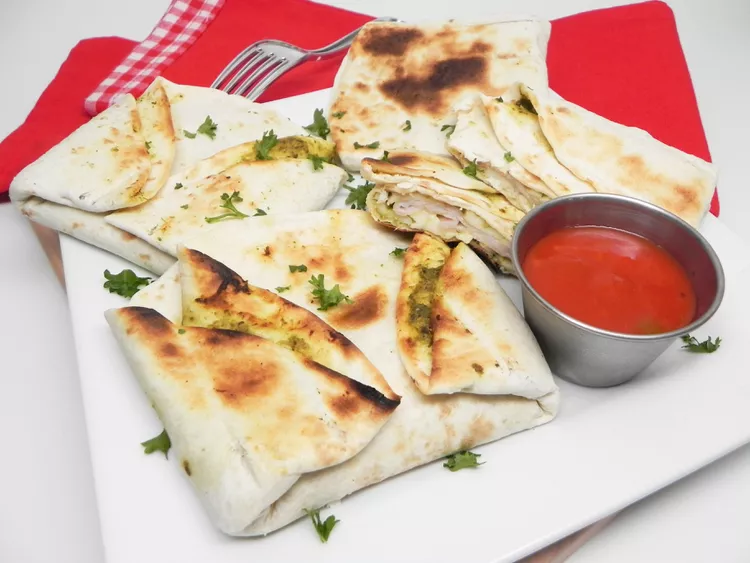

Toaster quesadillas are all the rage right now and are simple to make once you get the hang of it. The key is to make sure not to add too much to them.
They need to be as flat as possible so that they do not get stuck but move freely in and out of the toaster slots.